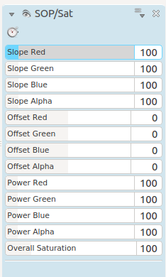

SOP/Sat Effect¶
Contents
This is the FilterFrei0r-sopsat MLT frame work filter. It changes Slope, Offset, and Power of the color components, and the overall Saturation, according to the ASC CDL (Color Decision List) reference
Changing the slope means multiplying the pixel value with a constant value. Black pixels will remain black, whileas brighter ones will be changed. All effects can be observed well when applied on a greyscale gradient and looking at the RGB Parade monitor.
You can use this effect to achieve proper white balance.
This filter implements a standard way of color correction proposed by the American Society of Cinematographers: The Color Decision List, also known as the ASC CDL
More information about the ASC CDL can be found on wikipedia.
The ASC CDL is a standard format for basic primary color correction (primary meaning affecting the whole image and not only selected parts).
Basically there are two stages in the correction: 1. SOP correction for each channel separately 2. Overall saturation correction
All corrections work on [0,1], so the RGB(A) values need to be transposed from {0,…,255} to [0,1].
SOP correction
Slope:
out = in * slope; 0 <= slope < \inftyOffset:
out = in + offset; -\infty < offset < \inftyPower:
out = in^power; 0 < power < \infty
Saturation
Luma:
Y = 0.2126 R + 0.7152 G + 0.0722 B(according to Rec. 709)Forall channels:
out = luma + sat * (in-luma)
As the values may exceed 1 (or 0), they need to be clamped where necessary.
See Granjow’s blog where he uses the effect to adjust white balance of a clip.